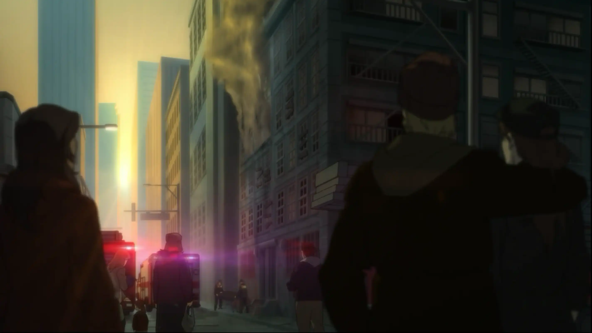
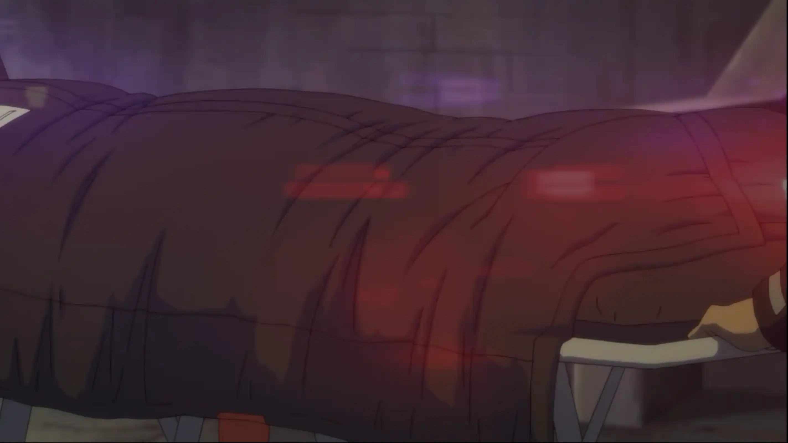
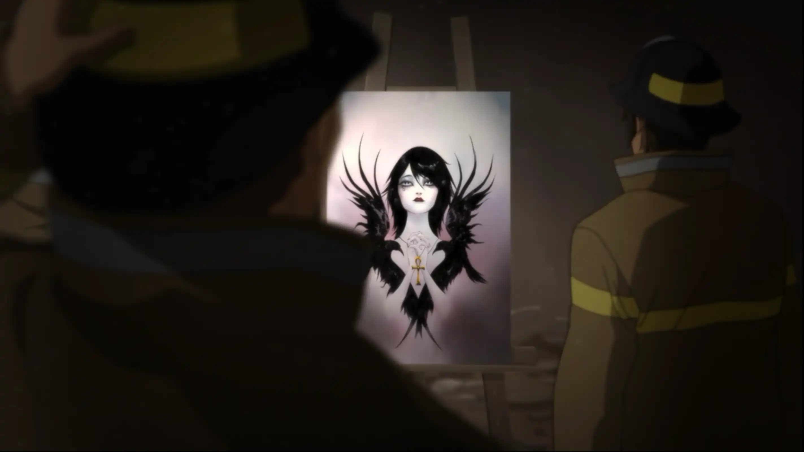
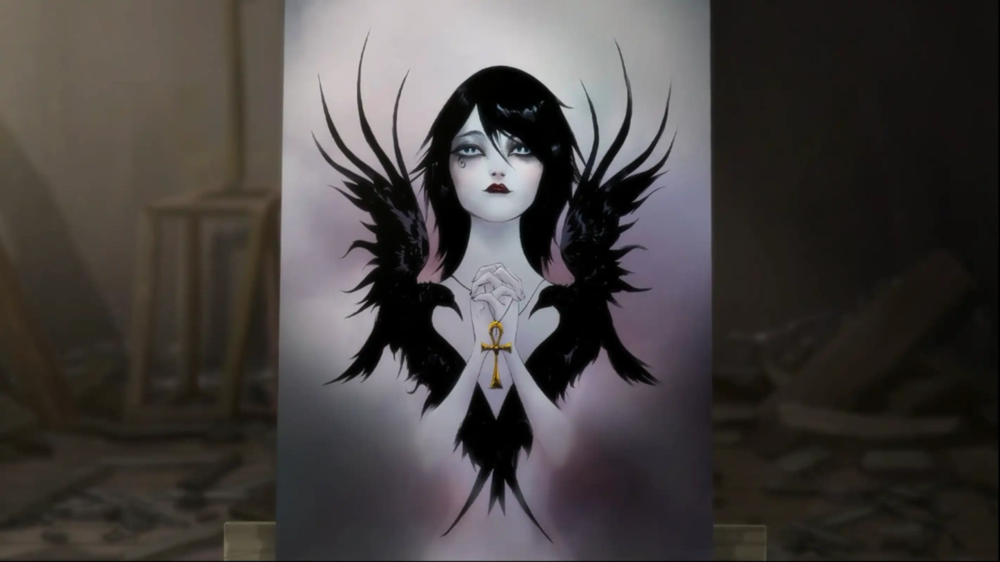

Lo que Sobrevive al Fuego | Legado
A veces, lo único que dejamos atrás… es lo que fuimos capaces de crear.
La mañana llega lenta. La luz se posa sobre los restos ennegrecidos de mi casa, como si intentara darles una última forma.
Veo cómo retiran mi cuerpo, cubierto y sin nombre, como si ya fuera solo un resto más entre las sombras de la madrugada.
Entre los escombros, un bombero se detiene. Mira a su alrededor sorprendido y dice que es una locura: todo se consumió por completo… excepto “eso”.

Se acercan tres… no sé si por deber o por curiosidad. Pero mientras examinan mi obra, yo los observo desde detrás del lienzo, como un fantasma atrapado entre las sombras del último trazo que di. Ninguno sabe que sigo aquí… y aun así, todos parecen sentirlo.

Cuando por fin lo ven de frente, el mundo se queda en silencio. No hay palabras, no hay susurros… solo la respiración contenida de quienes siguen vivos. Mi obra permanece intacta.
Así que esto era… lo último que dejé atrás. Frente a mí, el cuadro continúa firme, ajeno al fuego, a la noche, al derrumbe… ajeno incluso a mí. Ella, la figura que pinté sin entender del todo, se revela ahora como verdad: piel pálida, alas negras hechas de sombras, dos cuervos que la sostienen… y el ankh dorado entre sus manos, como si resguardara mi último latido. Los bomberos no saben quién es. Yo tampoco lo supe por completo. Pero al mirarla… comprendo. Fue la única belleza que no pude destruir. La única que me acompañó hasta el final. La única que sobrevivió al fuego.
